Playas, montañas y cultura única. ¡Elige tu aventura!
Ver tours disponibles 🚐 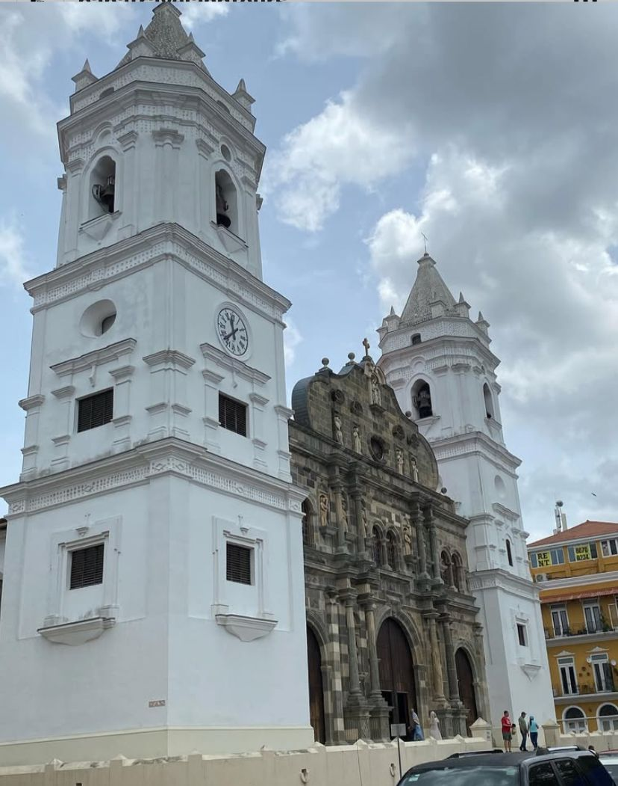
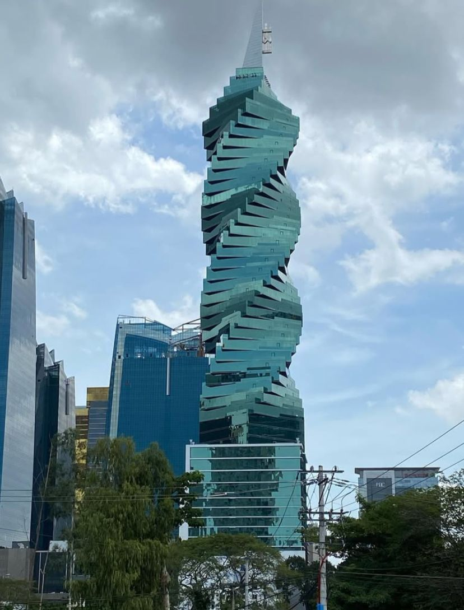
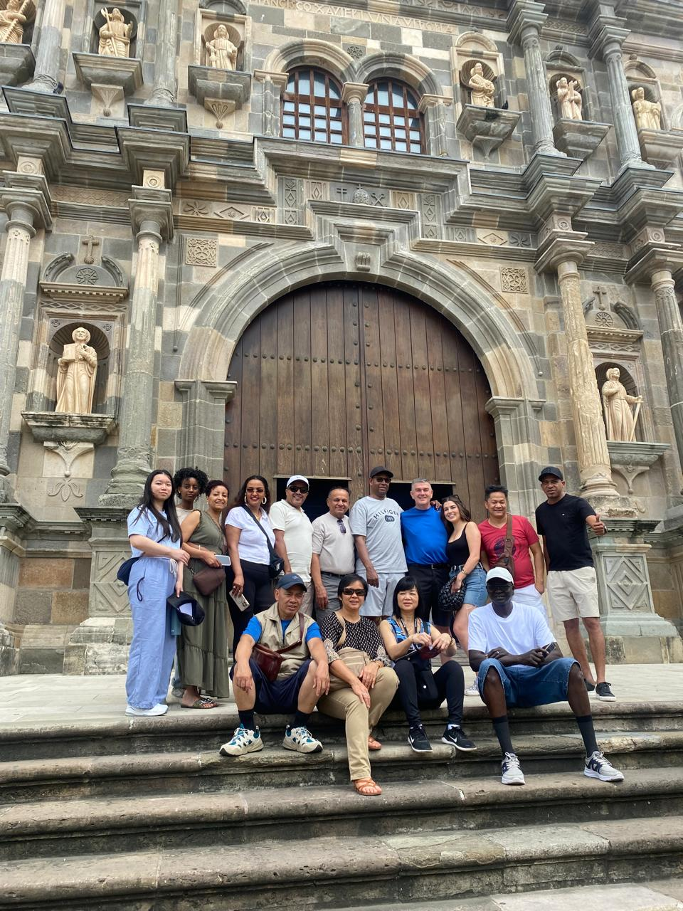
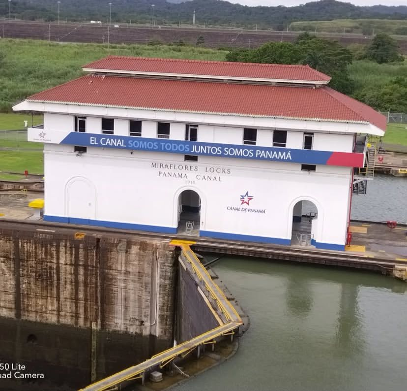
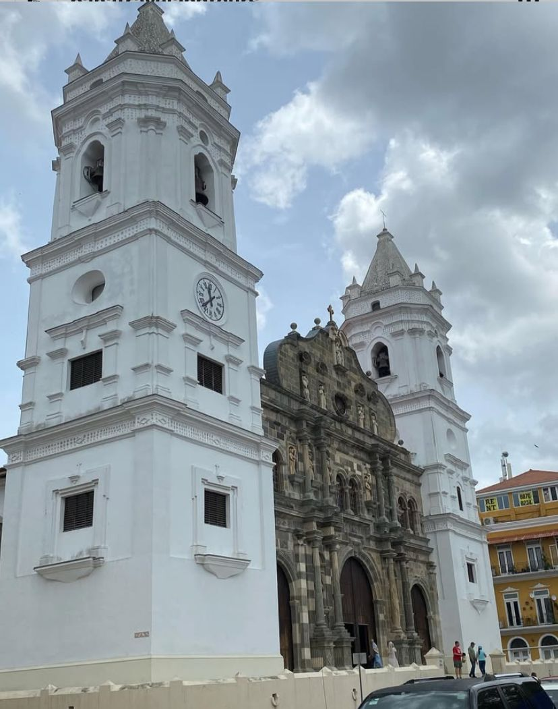
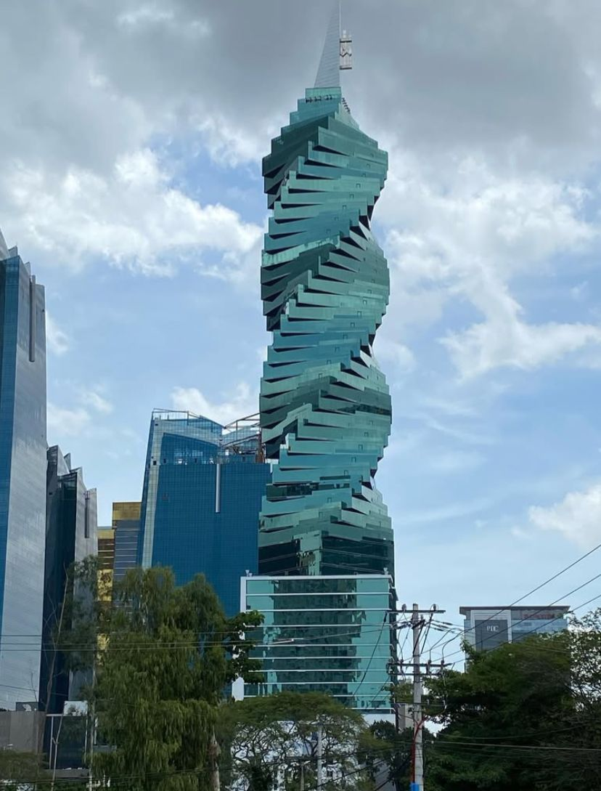
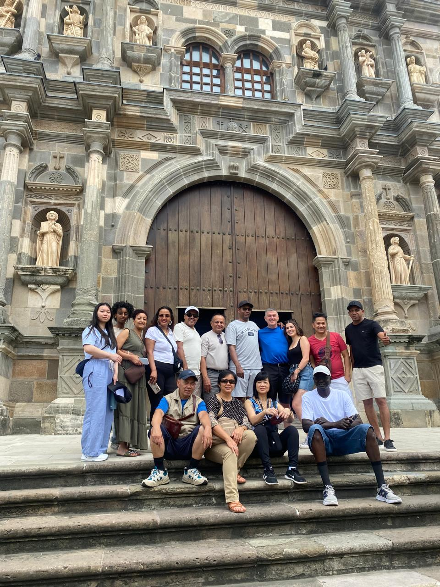
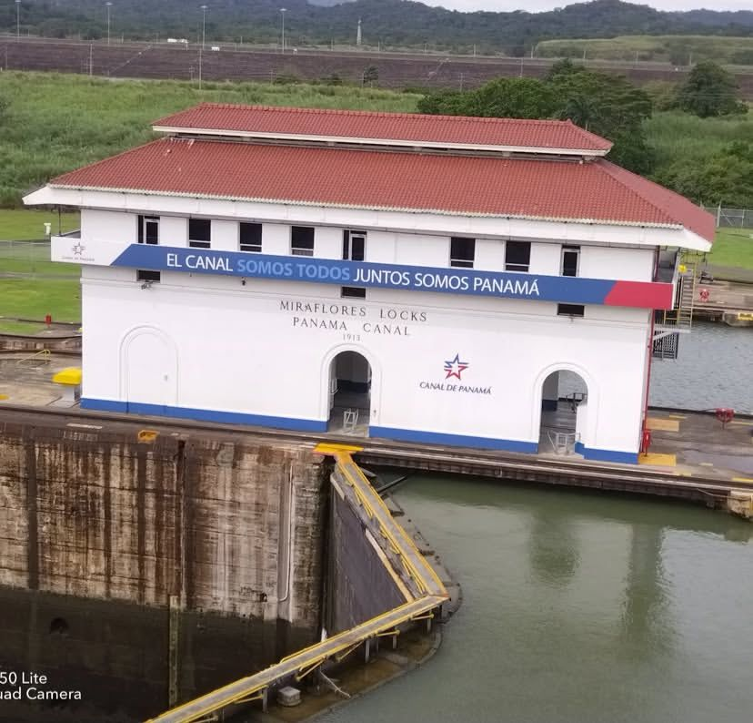
¿Listo para descubrir lo mejor de la Ciudad de Panamá? Este tour guiado te lleva por los lugares más emblemáticos y encantadores de la capital. Desde las maravillas de la ingeniería moderna hasta los sabores auténticos del mercado popular, cada parada cuenta una historia panameña que no te querrás perder.
A solo minutos de la Ciudad de Panamá, esta experiencia te lleva al corazón del Parque Nacional Soberanía, navegando por el majestuoso Lago Gatún, donde conviven la ingeniería del Canal y la biodiversidad más vibrante del país. La Isla de los Monos es hogar de especies como los monos capuchinos, aulladores y tamarinos, que se acercan curiosos a los botes en busca de frutas y atención.

Conecta con las aguas cristalinas y arena blanca del Caribe panameño. Este tour a San Blas incluye transporte cómodo desde la ciudad, pago de impuestos comarcales, almuerzo típico y paseo en bote a una islas paradisíacas. Ideal para quienes desean un escape tropical de un solo día.
Disfruta un día completo de compras y exploración en la Ciudad de Panamá. Este paquete incluye transporte a Albrook Mall, uno de los centros comerciales más grandes de Latinoamérica, además de paradas panorámicas en el Cosway de Amador y el icónico Puente de las Américas. Ideal para quienes quieren combinar compras, vistas y comodidad.
 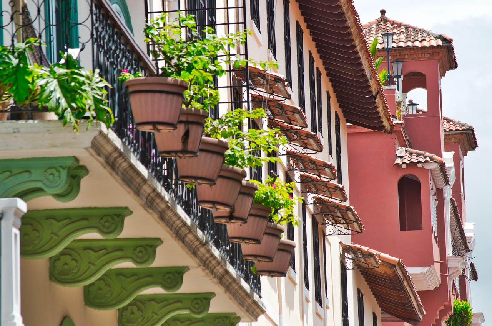
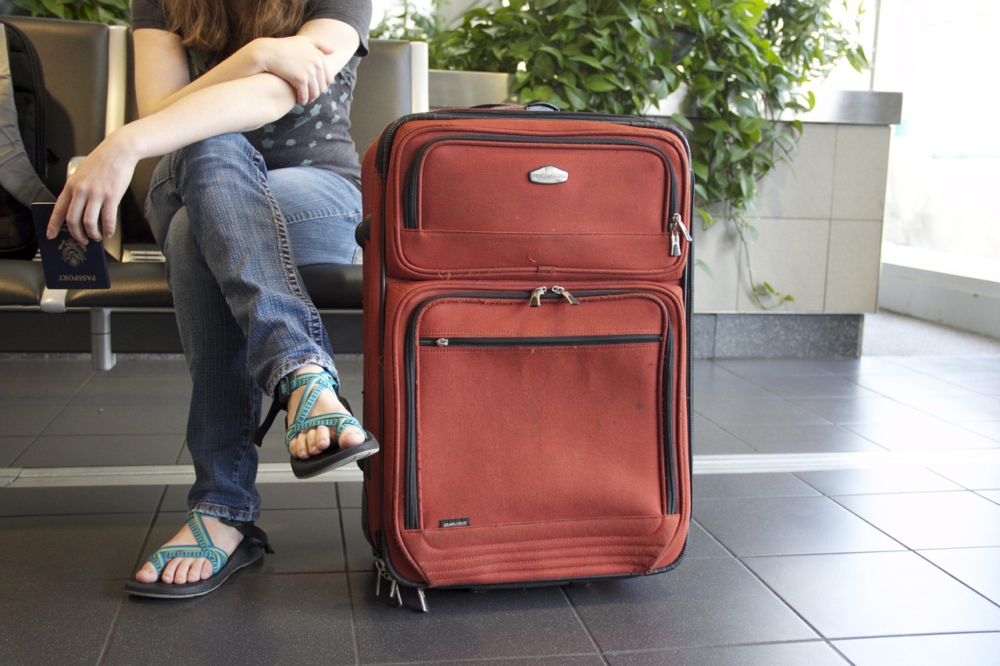
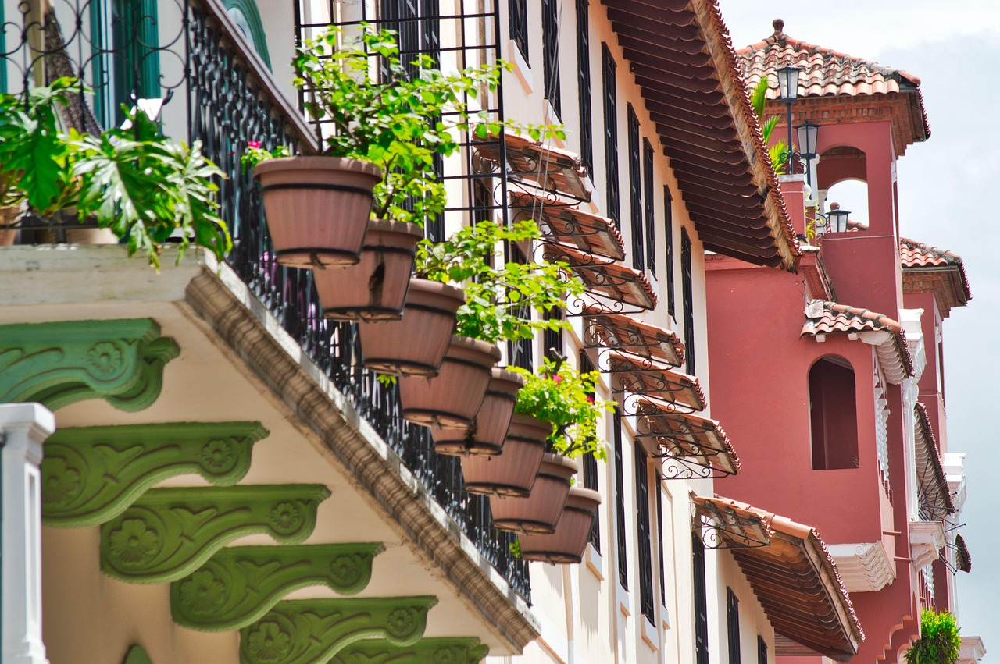
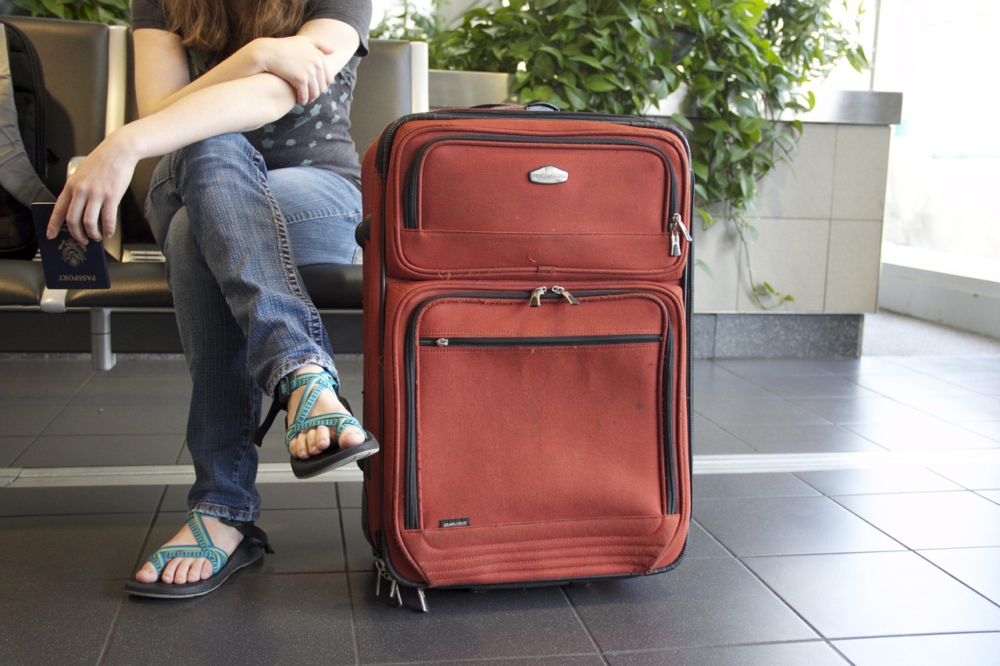
Comodidad, puntualidad y atención personalizada para tus desplazamientos en la Ciudad de Panamá. Ofrecemos traslados desde y hacia el aeropuerto, así como transporte interno y ejecutivo por horas.
Explora este mágico destino ubicado dentro de un cráter volcánico, rodeado de montañas, aguas termales y vida silvestre. Una escapada perfecta para reconectar con la naturaleza.
En Panamá Transports and Tours, llevamos más de 5 años creando experiencias turísticas auténticas e inolvidables en todo Panamá. Somos una agencia 100% panameña enfocada en brindar atención personalizada, seguridad y conexión con la naturaleza y cultura del país.

¿Tienes preguntas o deseas reservar un tour? ¡Estamos listos para ayudarte!